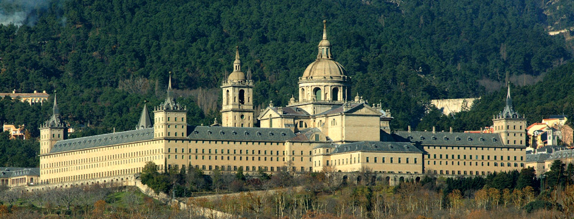
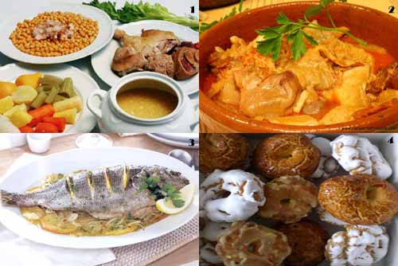
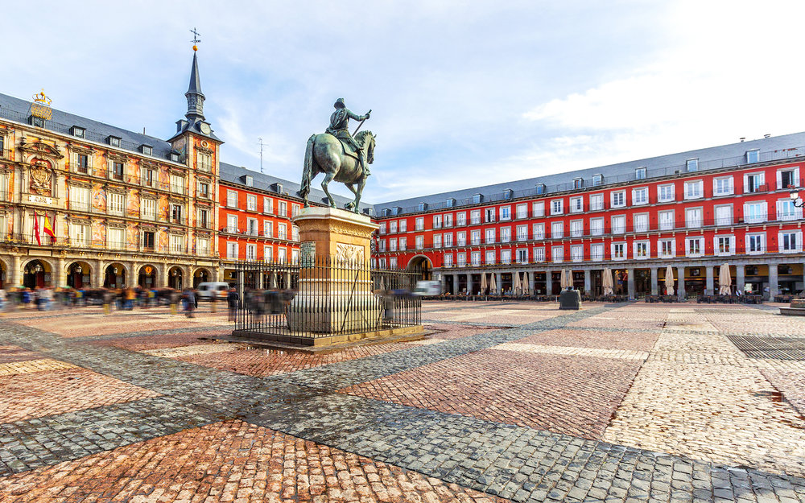

El municipio de Madrid es la capital de España y de la Comunidad de Madrid, comunidad autónoma uniprovincial. También conocida como la Villa y Corte, es la ciudad más grande y poblada del país, alcanzando oficialmente según el padrón de habitantes a 1 de enero de 2011 los 3.293.601 habitantes en su municipio, y la corrección a final de año del ayuntamiento, cifra oficiosa hasta ser aprobada en el Congreso a finales de ese año es de 3.294.110.
menuLa Comunidad de Madrid alberga cuatro tesoros que han sido declarados Patrimonio Mundial por la UNESCO gracias a su "importancia cultural o natural, excepcionales para la herencia común de la humanidad". El Monasterio y Real Sitio de San Lorenzo de El Escorial, la Universidad y Centro Histórico de Alcalá de Henares, el Paisaje Cultural de Aranjuez y el impresionante Hayedo de Montejo. Escápate a estos cuatro rincones de la Comunidad que no te puedes perder si visitas Madrid.
La gastronomía de Madrid es el conjunto de platos tradicionales de la capital española. Posee las tradiciones culinarias propias de la población inicial cuando Felipe II creó la capital, y posteriormente de los pueblos de su propia provincia que fueron aportando sus viandas a la cocina propia de la ciudad de Madrid
Madrid es la capital central de España con elegantes bulevares y amplios parques muy cuidados, como el Buen Retiro. Es famosa por sus ricas colecciones de arte europeo, con obras de Goya, Velázquez y otros maestros españoles en el Museo del Prado. El corazón del antiguo Madrid de los Habsburgo es la Plaza Mayor bordeada de pórticos y cerca se encuentra el Palacio Real y la Armería, que exhiben arsenales históricos
{kind=link}
{kind=link}